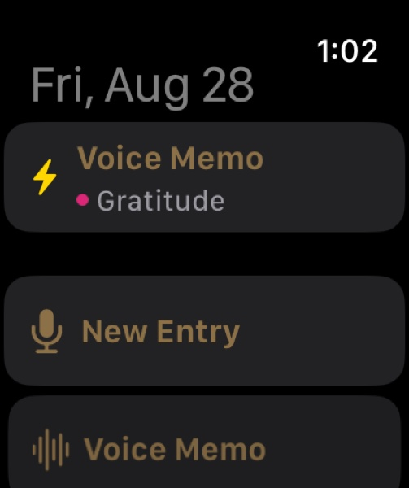

Julia Cameron's The Artist's Way made "Morning Pages" famous: three pages of unfiltered longhand before the day starts, to clear the sediment. The principle — get thoughts out faster than your inner editor can censor them — doesn't require pen and paper. Nothing outruns the editor like speaking.
Speak first, read later
Record a voice note in Dayleaf and the transcript is appended to your entry automatically, on-device. You keep both: the audio (the sigh, the laugh, the tone of that day) and the text (searchable forever). Rambling is the point — the transcript turns the ramble into something your future self can actually find.

From the wrist
The Apple Watch app opens straight into capture: raise your wrist, the recorder is already running, speak, tap stop. The memo lands in your journal with its transcript following moments later. Thoughts on a walk survive the walk.
Your old Voice Memos belong in here too
Got years of thoughts trapped in Apple's Voice Memos app? Share them to Files, then in Dayleaf: mic menu → Import from Files. Each one becomes an entry with audio and transcript.